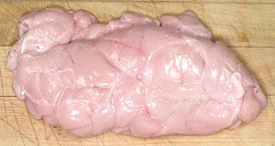

Veal Sweetbreads

[Mollejas de Res (Spanish)]
These come in two varieties, "throat sweetbreads" (thymus) and
"heart sweetbreads" (pancreas), sometimes called "stomach sweetbreads".
The larger, oval shaped heart sweetbreads are preferred by fancy
restaurants, so it is the elongated shaped throat sweetbreads we can
buy in markets here in Southern California. The two can be
cooked together if both are available, and they taste pretty much the
same. The photo specimen, a thymus, was 8 inches long, 4 inches wide,
1-1/4 inches thick and weighed 0.9 pound.
Sweetbreads are a highly superior (not just in my opinion) substitute
for beef brains in any recipe calling for those. Brains are mostly
mushy cholesterol, and carry a minute risk of mad cow disease.
More on Beef Innards
Mild, tender sweetbreads in flavorful sauces were once popular all
over North America and most of Europe, but today are served mostly
to connoisseurs in fancy restaurants. They are still popular in
Mediterranean and some other ethnic cuisines, and are well worth
your attention
Buying:
You won't find these in your average supermarket,
but ethnic meat markets, particularly those serving Latin American or
Near Eastern communities may have them. You will generally find only the
thymus as the pancreas fetches a higher price in the fancy restaurant
trade.
The photo specimen was bought from a large multi-ethnic market here in
Los Angeles (San Gabriel). It was packed in a plastic tub, but other
markets may have them in sealed vacuum pack bags or on a shrink wrapped
foam tray. In regions without ethnic markets you will have to order from
a specialty meat market, probably at a higher price. Buy them well before
the expiry date and cook them right after purchase as organ meats are
quite perishable (and market expiry dates tend to be over-optimistic).
Some "gourmet" recipes call for "milk fed veal sweetbreads", but we
don't have those around here. They're probably all sent to fancy
restaurants in New York and San Francisco, where they can fetch an
outrageous price. Here in Los Angeles, world center for ethnic cuisines,
we're fine with more robust flavors.
Yield:
After soaking, par boiling and pressing as shown
below, you will have about 46% of the weight as bought. Recipes almost
always give the weight "as purchased" and expect the weight loss. Yield
may be a little higher if all these steps are not followed.
Prep:
The way they're sold around here, sweetbreads
are pretty much ready to go, so step 1 may not be needed.
- Trim off any extraneous stringy stuff. Many recipes say to par boil
them about 3 minutes, chill, and remove the external membranes, but
those sold around here are pretty much ready to go with the membrane
already removed.
- Soaking is optional, and is only to give the sweetbreads a lighter
color, which I don't consider at all critical. If you do, rinse them,
then soak for about 4 hours in lightly salted water or milk. Milk is
said to get the best results but I've never used it nor thought it
necessary.
- If you will be dry cooking (grilling, frying, broiling), you want
to do this initial wet cooking to firm up the sweetbreads. Recipes
that go straight into broth to be cooked may not call for this. Place
in a saucepan with cold water to cover well. Squeeze the juice of 2
lemons into the pot and toss the sliced peels in too. Add 1 T salt.
Bring quickly to a boil, then simmer slowly for about 10 minutes.
Some recipes call for vinegar instead of lemon, and the amount of
lemon may vary.
- Chill immediately and thoroughly under cold running water or in
ice water.
- Pressing is optional, but it gives the sweetbreads a firmer
consistency so they are easier to slice neatly. Without it they may
be a little spongy. Pat them dry and place on a plate. Place another
plate on top. Put this assembly in the refrigerator and top it with
a large jar of pickles or a similar weight. Let them sit there for
4 hours, or a little more. The ideal pressed thickness is about 3/4
inch.
- The sweetbreads are now ready to use in any recipe.
ab_sweebz 091020 - www.clovegarden.com
©Andrew Grygus - agryg@clovegarden.com - Photos
on this page not otherwise credited © cg1
- Linking to and non-commercial use of this page permitted